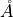
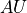
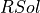
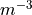
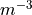
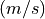
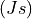
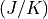

thomsonpy.constants package
thomsonpy.constants.units module
Note
The constant NE_MAS_FACTOR is needed for data formatting processes when the data have been obtained from Predictive Science Inc. simulations which are in raw format (MAS units).
- thomsonpy.constants.units.ANGSTROM_TO_METERS = 1e-10
Unit conversion factor: from Ángstroms () to meters (
 ).
).
- thomsonpy.constants.units.AU_TO_METERS = 149713100000
Unit conversion factor: from  to meters (
).
- thomsonpy.constants.units.AU_TO_RSOL = 215
Unit conversion factor: from to Solar radius ().
- thomsonpy.constants.units.METERS_TO_ANGSTROM = 10000000000.0
Unit conversion factor: from meters (
) to Ángstroms ().
- thomsonpy.constants.units.METERS_TO_AU = 6.679442213139665e-12
Unit conversion factor: from meters (
) to .
- thomsonpy.constants.units.METERS_TO_RSOL = 1.436080075825028e-09
Unit conversion factor: from meters (
) to Solar radius ().
- thomsonpy.constants.units.NE_MAS_FACTOR = 100000000000000.0
Unit conversion factor: from ne raw data (
 ) of Predictive Science Inc. to meters ().
) of Predictive Science Inc. to meters ().
- thomsonpy.constants.units.RSOL_TO_AU = 0.004651162790697674
Unit conversion factor: from Solar radius () to .
- thomsonpy.constants.units.RSOL_TO_METERS = 696340000
Unit conversion factor: from Solar radius () to meters (
).
thomsonpy.constants.universal_constants module
- thomsonpy.constants.universal_constants.c = 300000000.0
Speed of light .
- thomsonpy.constants.universal_constants.h = 6.62607015e-34
Planck’s constant .
- thomsonpy.constants.universal_constants.k = 1.38e-23
Boltzmann’s constant .